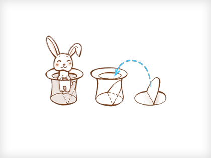

overflow: hidden/auto
Este comportamiento a mi me parecía extrañísimo al principio. La idea en este caso sería aplicarle un overflow: hidden o auto al contenedor de los elementos flotados. De ese modo se soluciona todo. Aplicando auto aparecerá una scrollbar, así que por lo general usaremos siempre hidden.
Adicionalmente para que funcione en explorer (oh, explorer!) necesitaremos aplicar el concepto has layout. Haciendo un resumen patatero diremos que para explorer un elemento hasLayout si (entre otras posibilidades) tiene width o height. Si el contenedor tiene ya width pues todo arreglado, si no podemos usar height: 1% en la hoja de estilo para explorer.
.editorial {
...
height: 1%;
overflow: hidden;
...
}
Explicado de otra manera por aquí, y el ejemplo correspondiente por aquí.